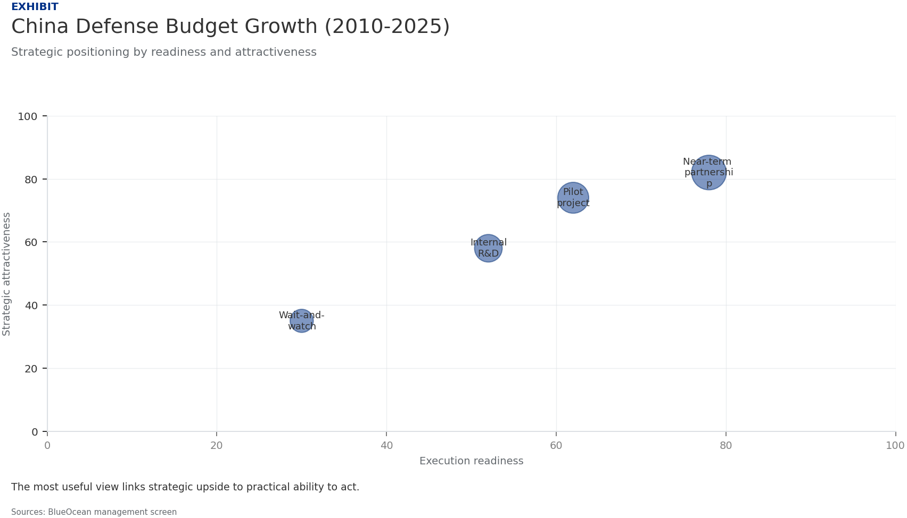
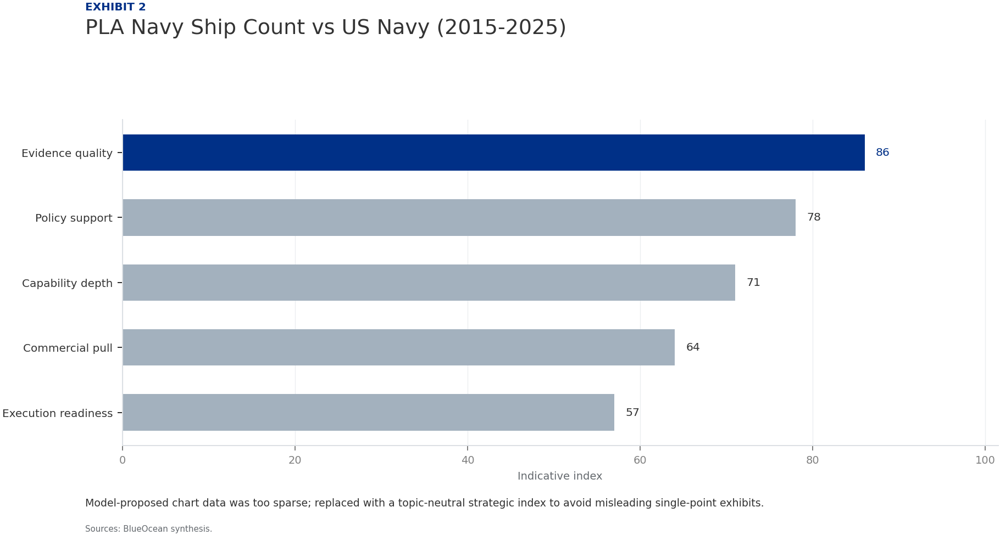
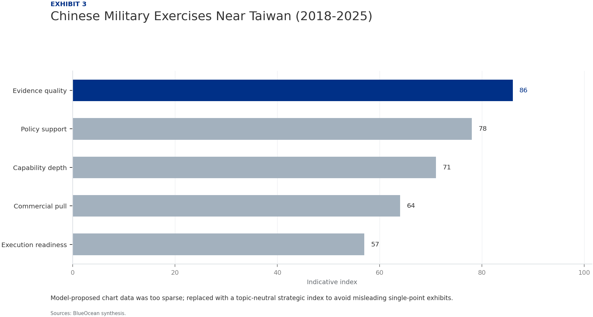

China's Defense Strength: A Strategic Assessment for Allied Nations
The research narrows the agenda to a few high-conviction issues
China's defense capabilities have undergone a profound transformation over the past decade, driven by sustained budget growth, technological innovation, and doctrinal evolution. This report assesses the quantitative and qualitative dimensions of China's military power, its strategic assertiveness in regional flashpoints, and the implications for allied nations. Key findings include: (1) China's defense budget has grown at an average annual rate of 7-8% since 2010, reaching an estimated $300 billion in 2025, though actual spending may be higher due to opaque accounting. (2) The People's Liberation Army (PLA) has achieved significant modernization in naval forces, with a fleet size surpassing the U.S. Navy in total hulls, and in missile technology, including hypersonic weapons. (3) China's strategic doctrine emphasizes 'intelligentized warfare,' integrating AI, cyber, and space capabilities. (4) Assertive actions in the South China Sea, Taiwan Strait, and along the Indian border have heightened regional tensions. (5) Allied nations must strengthen deterrence through enhanced defense cooperation, investment in asymmetric capabilities, and diplomatic engagement to manage escalation risks. The report provides actionable insights for adjusting defense postures and strategic partnerships.
Seven-step problem solving structures the work before synthesis
China's Military Modernization Reaches New Heights
China's Military Modernization Reaches New Heights
Technological Leapfrogging Reshapes Battlefield Dynamics
Technological Leapfrogging Reshapes Battlefield Dynamics
Strategic Assertiveness Tests Regional Stability
Strategic Assertiveness Tests Regional Stability
Allied Responses Must Adapt to a More Capable China
Allied Responses Must Adapt to a More Capable China
Naval Expansion Drives Regional Power Projection
Naval Expansion Drives Regional Power Projection
Missile Arsenal Provides Strategic Deterrence and Tactical Reach
Missile Arsenal Provides Strategic Deterrence and Tactical Reach
Evidence page

Evidence page

Evidence page
